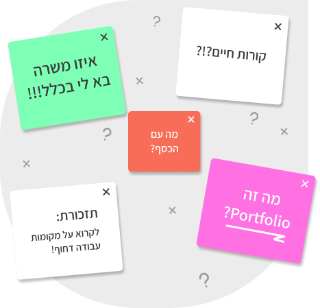

אז...
מאיפה מתחילים?
מתחילים מלהכיר את המשרות והתפקידים שיש בתחום, אילו מילות מפתח חייבים להיות לכם בקורות חיים, את החברות הכי מובילות וגם שכר ראשוני!
משרות ותפקידים ←
מילון משרות ותפקידים שיש בשוק
אנחנו בטוחים שנתקלתם במשרות שאין לכם מושג מה הן אומרות או למי הן מיועדות... לכן בנינו את מילון המשרות :)
מעצב/ת למידה
מתכננים חוויות למידה דיגיטליות בצורה מעניינת, ברורה ואפקטיבית.
מפתח/ת הדרכה
בונים תכני הדרכה, מצגות, קורסים וחומרי למידה לעובדים או לסטודנטים.
מפתח/ת לומדות
מפתחים לומדות אינטראקטיביות באמצעות כלים דיגיטליים כמו Storyline או Rise.
רכז/ת למידה דיגיטלית
מנהלים מערכות למידה דיגיטליות, מעלים תכנים ועוקבים אחרי תהליכי למידה בארגון.
מטמיע/ת מערכות למידה
מלמדים עובדים להשתמש במערכות חדשות ומסייעים בהטמעה שלהן בארגון.
כותב/ת תוכן לימודי
כותבים תכנים מקצועיים לקורסים, הדרכות ולומדות דיגיטליות.
מומחה/ית LMS
אחראים על ניהול ותפעול מערכות למידה כמו Moodle או Canvas.
מילות מפתח לקורות חיים
למדו איך לנסח בצורה מקצועית את הכישורים שלכם כדי לעבור מערכות סינון (ATS) ולבלוט בעיני מגייסים. לחצו על הכרטיסיות כדי לראות את ההמלצות.
הדרכה
מונחים מקצועיים מעולם הלמידה וההדרכה שיעזרו לקורות החיים שלכם להיראות מקצועיים יותר.
הדרכה
- ארטלייןArticulate Storyline
- רייזArticulate Rise
- מודל אדיADDIE Model
- מודל סאמיSAM Model
- מודל למידהInstructional Model
- לומדותE-learning Development
- תוכן לימודיLearning Content
- מצגותTraining Materials
- מערכת למידהLMS
- מודלInstructional Design
- למידה מרחוקDistance Learning
- הטמעהSystem Implementation
- הדרכת עובדיםTraining Facilitation
- MoodleMoodle LMS
- CanvasCanvas LMS
- למידה דיגיטליתDigital Learning
עיצוב
מונחים וכלים מקצועיים מעולם ה-UX/UI והעיצוב הדיגיטלי.
עיצוב
- פיגמהFigma
- פוטושופAdobe Photoshop
- אילוסטרייטורAdobe Illustrator
- XDAdobe XD
- uxUX
- uiUI
- wireframesWireframing
- אבטיפוסPrototyping
- מחקרUser Research
- בדיקות משתמשיםUsability Testing
- מסכיםInterface Design
- עיצוב אפליקציותMobile UI Design
- היררכיהVisual Hierarchy
- עיצוב רספונסיביResponsive Design
- מערכת עיצובDesign System
- מסע משתמשUser Journey
פיתוח
טכנולוגיות ומונחים שכדאי לנסח בצורה מקצועית בקורות החיים.
פיתוח
- htmlHTML
- cssCSS
- java scriptJavaScript
- react jsReact.js
- node jsNode.js
- vs codeVisual Studio Code
- git hubGitHub
- בניתי אתרDeveloped a website
- יודע לתכנתProgramming Skills
- בדקתי באגיםQA Testing
- מסדי נתוניםDatabase Management
- עבדתי עם APIAPI Integration
חברות מובילות בארץ שכל סטודנט חייב להכיר
לחצו כדי להגיע לעמוד הדרושים שלהן ולבדוק משרות רלוונטיות.
הכירו את מחשבון השכר שלנו!
בחרו תחום ומשרה לדוגמה כדי לקבל טווח שכר משוער.